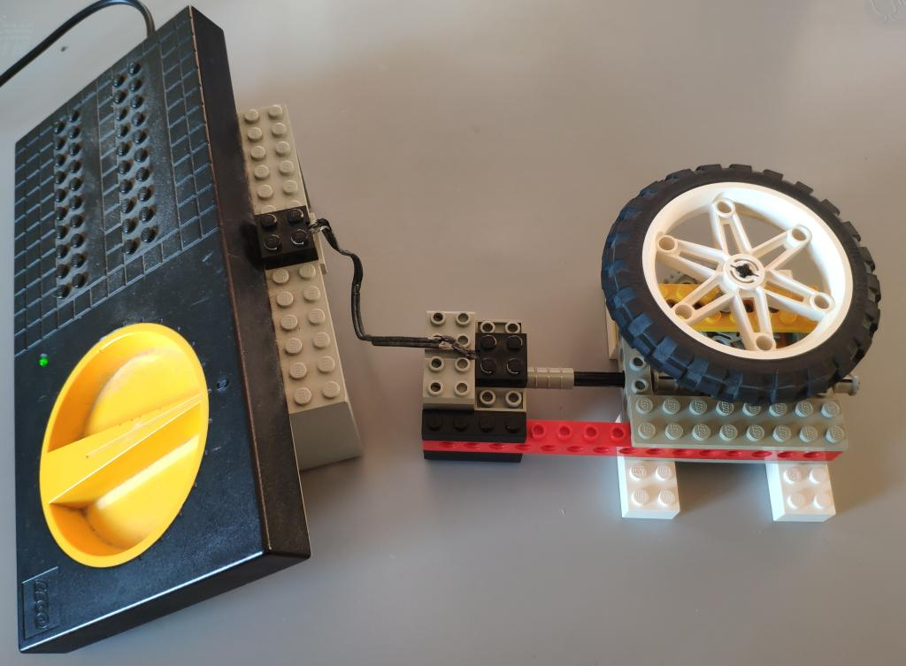

What
In a post from roughly a year ago I wrote about 3D scanning and compared techniques and products on the market at the time. Instead I found that photogrammetry and, by extension, structured light scanning is much more interesting at the moment.
Commercial scanners are still rapidly improving and there are price drops by the day. Yet I’ve learned that there is no one type of scanner for all uses and that craming all the processing into a small handheld device for a price point under 1k Eur leads to inevitable limitations.
I’ve experimented with photogrammetry for a couple of days and I’ll share my photography setups, software configurations and findings along the way.


Contents
Contents
When
3D scaning has many touching points with other fields. Taking measurements during renovations, experimenting with positioning of furnature, extending games with custom 3D models, 3D maps for robot localisation, virtual reality and augmented reality applications, 3D printing and more.
Due to this I’ve been keen on improvements in the technology for a long time and keep going back to experiment from time to time.
Why
The more I’ve looked into photogrammetry the more intersting it got. There are a number of topics involved:
- mechanics in camera positioning and turntables
- electronics, light barriers, to trigger cameras at fixed angles
- photography best achieved with industrial cameras, digital single-lens reflex camera (DSLRs) [2] or mirror-less cameras for faster triggering
- effects of lighting, shadows, colors, photography parametes like angle, exposure and lens types.
- algorithms that relate to optical tracking and the field of robotics like the Scale-invariant feature transform (SiFT) to track motion between shots
- open-source software like Meshroom that utilize a data-driven pipeline approach with highly configurable state-of-the-art algorithms
Background
Working Principle
In photogrammetry we take photos of an object from a large number of varying angles. Similar to software that produced 2d panoramas - and visual robot localisation, and robot tracking for that matter - the 3D reconstruction software will try to find matching features in pairs of images. Using the coordinates of the matching features it can then calculate the relative viewing angles of the cameras that took the images.

Ideally we would have multiple perfectly calibrated cameras that take images from multiple equally-spaced angles at one instant.
In practice we have a lot less cameras, perhaps only a single camera. We simulate multiple cameras by moving the object. Either by hand or by turn table. In that case a single camera will be intentionally treated as multiple destinct cameras at different positions by the algorithms.
If both feature detection and matching is accurate enough, we have enough data to calculate the position of points in 3D space.
Software
“Meshroom” is the current goto open-source software for photogrammetry. At frist glance it seems Blender-level complicated, but it is really easy to use and does the best it can to make complicated and state-of-the-art algorithms involved in photogrammetry accessible.
Download
It can be downloaded from the “AliceVision” [1] webpage and is one of the few software that can be downloaded, extracted and just run on any Linux system with Ubuntu I’ve used in the last 5 years or so. It seems they’ve properly statically linked dependencies it needs into the binaries. Yet its takes only roughly 2 GB of space - nothing compared to most of the Snap or Flatpaks that package entire copies of environments alongside browsers for web-based apps.
On my machine with an NVidia RTX 3060 it even detected NVidia CUDA automatically (you can check this using the ```nvidia-smi`` tool) and used graphics acceleration without any futher configuration whatsoever. Impressive.
wget https://www.fosshub.com/Meshroom.html?dwl=Meshroom-2023.3.0-linux.tar.gz
tar -xvf Meshroom-2023.3.0-linux.tar.gz
./Meshroom-2023.3.0/Meshroom
Data Pipleine
In the application you’ll see the data pipeline.

The software is used by adding a set of photos, ideally a couple of hundred photos from various angles, and then configuring parameters of each node and then triggering each node one-by-one left-to-right in the pipeline (right mouseclick -> “compute”).
Visualisation
Double-clicking on a node makes the output of that node appear in the 3D viewer in the top right of the Meshroom window.
We can, for instance, double-click on “FeatureExtraction” and then on the three dots below the 3D viewer to visualize the points that the feature extraction detected in the image.
That’s extremly useful when debugging issues when using turn tables related to the “FeatureExtraction” pickung up too much of the stationary background.
Steps of the Pipeline
A basic understanding of the algorithms involved and how Meshroom applies them is very helpful in troubleshooting. I’ve tried without bothering about the details at first. That didn’t get me very far. Researching more I ended up uncovered so many issues with my camera setup, the settings in the nodes and so on. It really helps to have a basic understanding of each node in the pipeline.
The goal of the pipeline is to take the 2D photographs, run heavy algorithms on them and output a mesh (set of hundred thousands of triangles oriented in 3D space that describe the shape of the object) alongside the texture (the color)
Going through the default pipeline in Meshroom:
- Camera Init
- reads the photos and their respective meta data
- remarks
- there is also a video node that can take frames from a video file
- the node also reads metadata from the images e.g. focal length. It may make sense to make sure we’re not loosing that information in our processing for instance when manually extracting frames from a video.
- I’ve found image of 1024x width to be a good balance for computation time.
- if meshing came out properly on the 1024x, we can rerun it over night with higher resolutions.
- the graphics cards VRAM seems to be the limiting factor for high resolutions, but with high-performance cloud providers used for A.I training and running LLMs you could always buy some compute for something useful like this.
- Feature Extraction
- tries to detect features in the individual images
- remarks
- default is to “Domain-size pooling Scale-invariant feature transform” (dsp-sift)
- it is very effective in picking up minute details making it perfect for robot localisation or motion of a camera around an object
- it’s a little less ideal in turn table scenarios, as it may pick-up the background and conclude the camera is stationary. That will typically make the output mesh unusable as the calculation of the 3D positions will be erroneous.
- we can additionally stick markers to the turntable. The printable CCTAGs depict circles of varying width and releative radius. If they are clearly seen in each of the images we can enable CCTAG3 [4] in the feature extraction to help match images.
- Image Matching
- will find pairs of consequetive images
- comparing each image to each other image would be computationally heavy and not neccessary in most cases as images are usually shot in sequence
- hence this nodes can use numbered sequences in the file names “SequentialAndVocabularyTree” and it is set to this by default. “Exhaustive” would compare each image to each other image.
- remarks
- I learned the hard way that using a fast spinning turntable and low shutter speed is really bad. It yields numbered shots that are not in order of angle of rotation. That completly throws off the Image Matching node as it asumes the incoming images are in order regarding position.
- Feature Matching
- this node will then compute the positional differences of the features in image pairs
- StructureFromMotion
- here it gets interesting: we now have the features and their relative positions in 2D to one another.
- with this information we can calculate the viewing angles in 3D for each photo - i.e. the positions of the cameras
- remarks
- the visualisation of this is very useful for further debugging issues
- if we see that the camera angles are not evenly spaced in 360 degrees around the object, then things went catastrophically wrong in the previous nodes
- inevitably the meshing will produce a shapeless mess (or a so-called “unförmiger brei” (ger.) a “shapeless porridge”)
- PrepareDepthScene, DepthMap, DepthMapFilter
- in essense these nodes produce a heatmap of depth, like a relief map for lack of a better word.
- remarks
- the “Downscale Factor” can significantly reduce compute time at a loss of quality
- the “DepthMapFilter” node has a setting “Min Consistant Cameras”. Points will only be considered that are matching in the data from multiple viewing angles. If you have only few images the documentation states it may make sense to lower this and “Min Consistant Cameras Bad Similarity” from 3 and 4 to 2 and 3 respectively [3]
- Meshing
- produces an intermediate mesh
- we have to filter that mesh in next node
- remarks
- we can set “Max Input Points” and “Max Points” here
- these parameters require a tradeoff: depending on the object we’re scanning we may rather want less outliers and a smooth surface or more detail at the expense of more outliers in the data.
- MeshFiltering
- we can then filter mesh triangles
- the idea here is that triangles with a large area in the mesh are likely due to outliers
- for instance, because a triangle was stretched far due to one of its points being way out of the range of the object we’re scaning.
- remarks
- theses setttings also differ from object to obect we’re scanning and thus requires manual experimentation on each scan
- luckliy due to the data-driven pipeline/node architecture of Meshroom we can just rerun only the later node without repeating all the computations from previous nodes
- Texturing
- the last node will produce the texture for the mesh
- this will “color” the model
- remarks
- Meshroom outputs files to the “MeshroomCache” directory next to the project file
- for instance to
MeshroomCache/Texturing/<some hash>/texturedMesh.[obj|mtl|exr]
Challenges
There were are a number of challenges that I’ve painfully experienced.
Most of theses are related to turntables scanning as I don’t have many cameras and wanted to automatically capture as opposed to walking around the object and manually taking 100+ photos.
The problems will manifest in the computed camera positions in Meshroom. IF the camera positions are not accurate, then the resulting mesh will go terribly wrong.
When using turntables we need to fool the algorithms in Meshroom to think the camera is moving and not the prop in a stationary environment.
- Turntable & Positioning
- the first turntable I built was made from wood cut round on a jigsaw with a bicycle chain glued around it to make a giant cog. A drill motor would drive it. It runs way too fast, it woobles.
- from there I used pieces from an old Lego set and contiously improved on that.
- smooth motion, a perfectly centered object and a large enough table space so that ideally the camera only captures the object and the rotating table is important.
- Picking up the background
- the SIFT algorithms are designed to capture whatever characteristic they can find. If you have a stationary cable behind the table in the image or even the tiniest of holes in a wall that are in focus, the algorithm will conclude the camera was stationary messing up the final mesh.
- Object Shadows
- this is particularly true for shadows. As the lamps are in fixed positions the shadows will be as well. Even worse they will be on the turn table.
- shadows can only be defeated by multiple light sources from multiple angles
- Background Shadows
- we also need to get rid of shadows - and also table corners for that matter - behind the turn table
- ideally we’d have a big open space behind the turn table so that the background is clearly out of focus
- I’ve used a large matt black mouse pad positioned such that corners are rounded
- Reflections
- similarly to shadows, spot light reflections also throw the algorithms off.
- ideally polarisation filters on the camera lenses and lamps are added to remove the shiny reflections.
- Turntable Surface & Reflections
- as my clever girlfriend astutely remarked: the turn table should be black. White surfaces show more reflections.
- the turntable itself does not need to be perfectly evenly coloured. In fact the opposite is better: adding positional markers like CCTags can help. After all we want to the algoirithms to pick up on the rotation, just not the background, shadows or reflections.
- Even spacing and ordering
- it’s extremely important the images are in order and the angles at which they were captured are more or less evenly spaced
- due to my Canon EOS 550d DLSR low shutter-speed I found that recording videos and taking every 10th frame of the resulting 15 fps 1080p video works better than individual captures.
- even spacing also makes it much easier to manually remove images that cause outliers by stepping through the images in Meshroom and viewing the computed viewing positions in Meshroom
How
Photography Setup
Next I’ll show how my photography setup has evolved of the past days.
I will share my capture setups and with the above information we can analyse the pitfalls I’ve encountered with each of them.
1) the bicycle parts turntable
As it turns out building proper turn tables is an art.
Sometime October 2023 I set out to build a first turn table base on an idea I had had for a longer time.
This wasn’t indended for photogrammetry and while the approach may work, this version is completly unusable for photogrammetry. The idea was to cut wood as round as possible with a jig saw. Rotating it against a disc sander would have helped, but I didn’t do that at the time. Then run the round plate on coasters. These were 3D printed and utilized ball bearings. It would have been better to have ruber ball bearings, soft wheels from inline skates of even Lego wheels to dampen vibration and noise.
I spray painted it white - white is not an ideal color for photogrammetry due to reflections - see above. Along the edges of the wood I glued a bicycle chain. To turn it into a large cog wheel.


A bicycle sprocket attached to an old drill motor turns the table - way too fast for this use case. The motion is also not smooth.
2) Lego 1
The next quick build utilized Lego a worm-gear turns a lego tire. The motor, taken from an early Lego Mindstorms set and the power supply from an early 90s railroad set to power it. Unfortunately the electic cables are beginding to loose their insulation, but they still work.
Not great. While Lego is probably the best and easiest way I currently have at hand to build this, the table movement is janky. The table is also too small to fill the full-frame of the camera and I later realized how important that is.
For lighting I used a Beurer “daylight lamp”. That works okayish, but you can see the glate on the object and the shadows due to the light coming from one location.
2) Lego 2
To improve on that I’ve place a DVD on the wheel. Then later covered it in kitchen roll to give less reflective surface Meshroom can better pick up on.

Using this I got my first somewhat usable model - albeit only an approximately 120 degree range of fotos from the front was usable without confusing the algorithms - but the motivation was there to continue and enhance this.
3) Lego 3
A different part selection helped with a more smooth movement. The table size increased. Instead of a single light source I started using three desk lamps. Including the lamp with the broken base that I’ve replaced with a mason jar. These lamps use small 20-35 W “halogen” light bulbs.
The positioning in the image is not ideal. It’s better to have them shinign light in different angles, but primarily from the front.


3) Lego 4
I finally arrived at this. I thumbtacked two binder clips to the wall and use them to hold up my maticulously cleaned giant matt black mouse pad. The mouse pad is not pushed into the corner, but rather curved to not produce a corner the software could pick up.
The three desk lamps shine light from the front.
I’m using the more heavy wodden round white plate from the first turn table, but place on the lego contraption from before. The weight makes it move mor evenly.
As you can see in the first image the white surface is not ideal. It shows reflections.
The surface of the turn table doesn’t have to be perfectly even - quite the opposite in fact beacuse we want to it to be picked up - but should absorb reflections. To achive this I cut some black cardboard from a show box and placed that on the table.
Additionally I hope the black and white transition is easy to pick up. If not I’ll add the CTAG markers as well, though this requires a more complicated pipeline configuration in Meshroom.


4) TV turn table
In the meantime I’ve ordered a cheap turntable made for turning television sets from eBay. It hasn’t arrived yet.
These were quite expensive for some time, but now - probably due to lack of use with modern large and lightweight flatplanel television - they are being sold off for cheap. It can apparantly carry up to 100 kg, which could make it possible to put a person on it which could be interesting.
Image Capture
I’m using a Canon EOS 550d DSLR camera on a tripod. I record video at 15 fps with the turntable spinning for a full rotation on three heights.
Helpful Bash scripts
After capture I use bash scripts to do some preprocessing along the lines of
#!/bin/bash
INP="06/in3"
OUT="06/in4"
for FILE in $INP/*.jpg
do
FILEBASE=$(basename ${FILE%.*})
echo $FILEBASE
# <<< PAYLOAD HERE >>>
done
The payload can be any of these:
Extract every 10th frame of a video
(replace *.jpg with *.MOV in the above script)
ffmpeg -i ${INP}/${FILEBASE}.MOV -vf "select=not(mod(n\,10))" -vsync vfr "${OUT}/${FILEBASE}-%03d.jpg"
Automatic neural net background removal
I’ve used this with the earlier Lego turntable contraptions as there was too much background noise in the images.
With a decent setup that keeps shadows and background out of the image, full-frame capture of the table and object this should be required. It’s also a bit error-prone, but an amazing gerneral trick to know.
Keeping the turntable far away from the background and making sure only the object is in focus helps alot with turn table setups.
rembg i ${INP}/${FILEBASE}.jpg ${OUT}/${FILEBASE}.png
Crop image
If you’ve captured something stationary on the side somwhere in the background it
The first two numbers are the image width and height. The second and third are offset from left and top respectively.
convert ${INP}/${FILEBASE}.jpg -crop 710x710+150+25 ${OUT}/${FILEBASE}.jpg
The loss of camera focal length information in the input images is not ideal
After theses steps the images are ready to be loaded into Meshroom.
Progress
With all of the above I’m continously improving the setup whenever I find time to. It might be interesting to enhance this by getting a projector to project a grid onto the object. I’m not sure how to setup the software yet, but I know this has been done years ago in commercial products such as the “David SLS Scanner”. It seems to have been used in industrial setups. Nowadays industry has likely shifted to handheld scanners upwards of 20k Eur. Such structured light scanning (SLS) setups require space and calibration. Frequently setting everything up, calibrating it and then removing it again would be tedious.
1] https://alicevision.org/#meshroom 2] https://en.wikipedia.org/wiki/Digital_single-lens_reflex_camera 3] https://meshroom-manual.readthedocs.io/en/latest/faq/reconstruction-parameters/reconstruction-parameters.html 4] https://github.com/alicevision/CCTag/tree/develop/markersToPrint